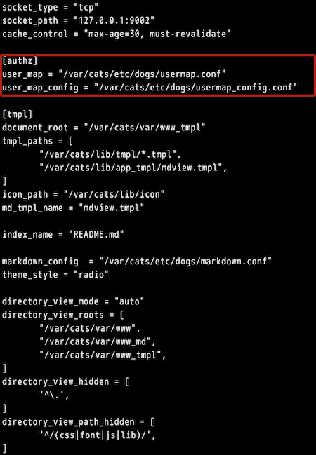

おはようございます。こんにちは。こんばんは。ふぇにっくちゅん です。
今回は、前回解説した cats_mdview の拡張版である cat_tmplview を解説します。
cat_tmplview も Markdown を描画するアプリです。
cats_mdview との大きな違いは、 Markdown ファイルの中で、表示させる内容を動的に切り替えられるという点です。
本記事で扱うのは /var/cats/bin/ の中に置いている、cat_tmplview というファイルです。
このファイルが、拡張版の Markdown を描画するアプリです。
また、このアプリが参照する設定ファイルは以下のとおりです。
また、サンプルには用意していませんが、誰にどの内容を表示させるかを決める設定ファイルがあります。
このファイルは、usermap.conf というファイルで、動画中に作成しました。
では、本記事で扱う登場人物（ファイル）を紹介したところで、以降に解説していきます。
拡張版 Markdown アプリを稼働させるファイルは、cats_dogs-tmplview.service という設定ファイルです。
以下に、デモで利用したファイルを示します。
このファイルは、アプリをどのように稼働させるかが記述されています。
cats_mdview と同様に、ExecStart の右には、稼働させるアプリの配置場所、稼働させるアプリが参照する設定ファイルを記述しています。
参照する設定ファイルは、アプリがどのように動作するかが記述されたファイルです。
このファイルで、アプリが稼働するようになります。
拡張版 Markdown アプリの動作を決めるのが、tmplview.conf と usermap.conf、usermap_config.conf です。
tmplview.conf は、 Markdown の構文を設定することができます。
基本的には、前回説明した cat_mdview アプリと同様です。
後述しますが、文章を誰に表示するかを決める usermap.conf と usermap_config.conf の配置場所を指定することが主な違いです。
今回解説するアプリは、ユーザの情報をもとに、 Markdown の表示する内容を動的に変更します。
たとえば、以下の登場人物がいるとします。
それぞれの登場人物向けに、表示を切り替える Markdown ファイルは、以下のとおりです。
これを、拡張版アプリで表示させると、以下のようになります。
上から Aさん、Bさん、Cさんの順にブラウザの表示を示しています。
アプリが動的に表示を変更する処理は、usermap.conf と Markdown ファイルに記述されたテンプレートの記法が連携して実現されています。
まず、 Markdown 上のテンプレート記法は、go の標準ライブラリに従います。
つまり、 Markdown 上の if の右側が評価され、表示するか否かを決めています。
この評価される右側の部分を解説します。
上記の場合、「in_group（グループ名）が "userA"（というグループ）ですか？」という問いを判定しています。
では、誰がどのグループに属しているのでしょうか？
それを決めているのが、usermap.conf です。
usermap.conf は左側にユーザ名を、右側にグループ名を記述します。
そのため、Aさんは userA というグループ（右側）に所属していることがわかります。
※ userA というグループ名に違和感がある方はこちらへどうぞ。
先述したアプリの動作は、以下の設定ファイルで指定します。
拡張版の Markdown アプリは、このファイルを参照することで、動的に Markdown の描画を切り替えます。
詳しいフォーマットは「user_map関連の仕様」を参照ください。
また、ユーザとグループ名の文字列をチェックする設定ファイルが usermap_config.conf です。
このファイルに記載された、正規表現のルールに従わないユーザ名やグループ名はエラーとすることができます。
tmplview.conf は、アプリが表示するコンテンツ（ Markdown ファイル）の配置場所など、細かな動作を指定するファイルです。
また、先述した usermap.conf と usermap_config.conf の配置場所を [authz] に記載します。
以下に、デモで利用した設定ファイルを示します。

前回の解説記事で説明した内容とかぶるため、本記事での説明は省略します。
詳しくは、「cat_tmplviewプログラム」を参照ください。
今回は、cat_mdview アプリの拡張版である cat_tmplview のモジュールについて解説しました。
次は、ちょっとした Web UI を作成できるアプリを解説します。
また、cat_mdview と cat_tmplview を組み合わせて使う際の挙動について紹介した記事もありますので、ぜひご覧ください。